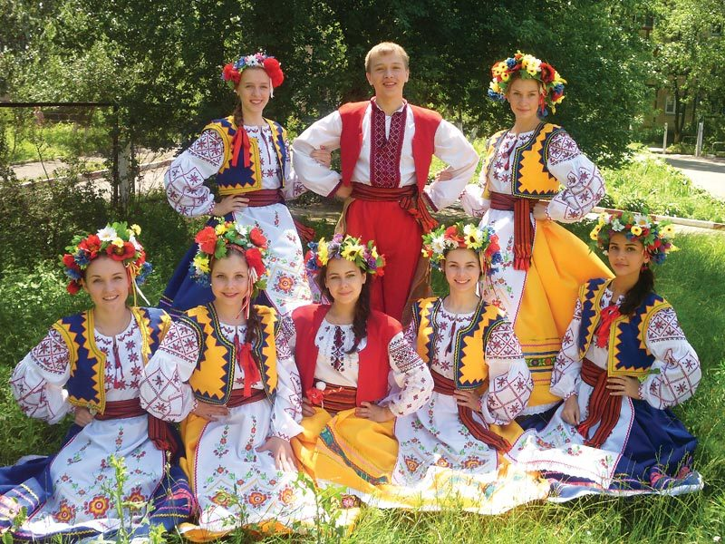
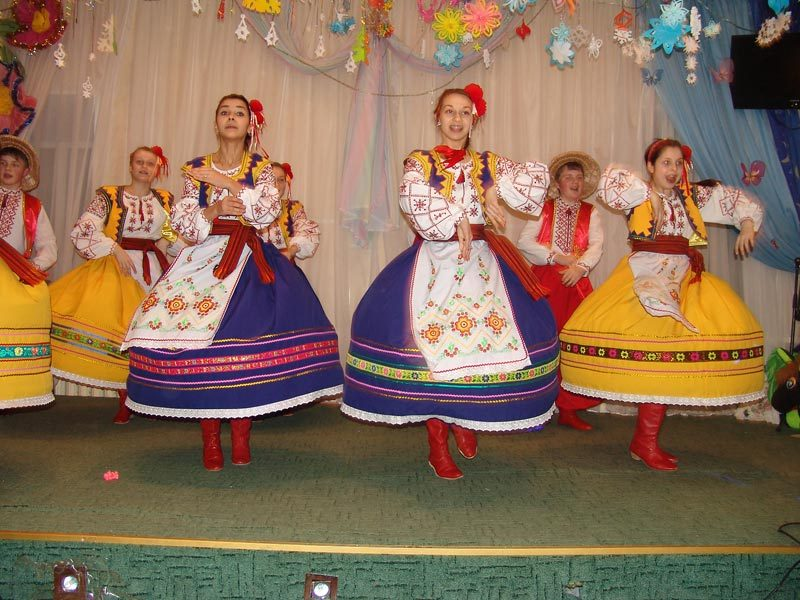
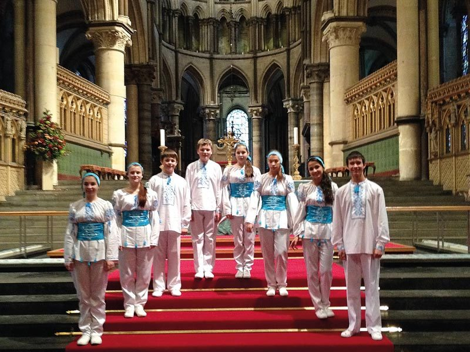

Zozulenka is a group of young people from School No. 20 in Cherkassy. Trained by their teacher Natalya, they perform regularly in Ukraine, and at Hope Now's invitation they made their first UK tour in 2011.
A taste of Ukraine
They sing traditional Ukrainian songs alongside some well-known English ones, and have toured the UK several times since. They'll be back — keep an eye on the Latest News for dates.


Host a Zozulenka concert
Would your church like to host a Zozulenka performance? Do get in touch with the Hope Now office. And if you'd like to hear them right now, just search for “Zozulenka” on YouTube.

The DVD
A DVD of some of Zozulenka's UK performances is available from the Hope Now office — head to the Contact page to ask for details.
Good to know
From this ministry

Hear them, or host them
You can hear Zozulenka on YouTube, or invite them to perform at your church. To host a concert or request the DVD, get in touch with the Hope Now office.